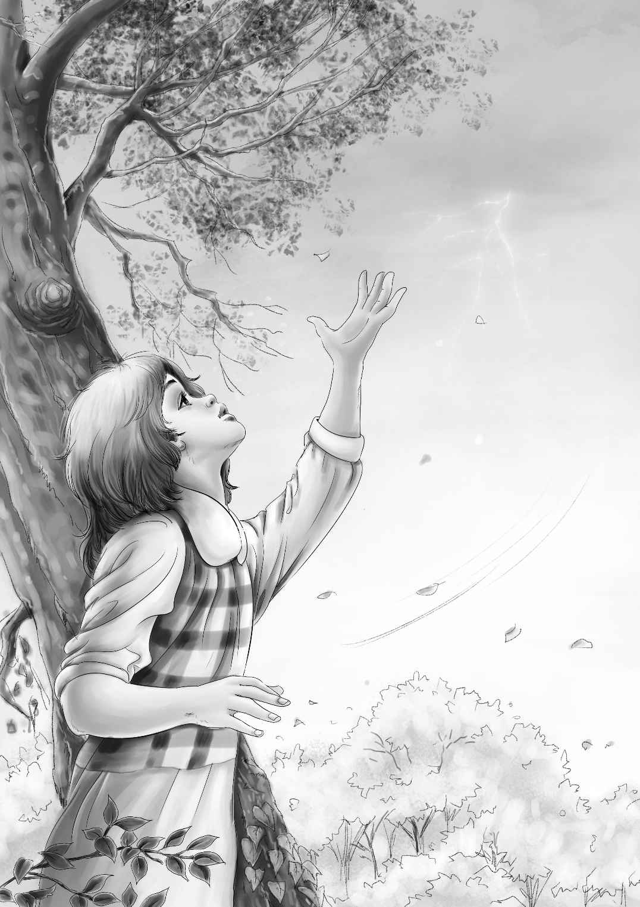

A New Home in the Woods

等杰西终于睁开眼睛时，已经是清晨了。乌云遮住了太阳，天上阴沉沉的，四周一片灰暗。她坐了起来，环视了一下周围，又抬头看了看天空。这时，一声炸雷突然响起，杰西意识到真的要下雨了。
“怎么办，我们该去哪儿避雨呢？”杰西想。
风越刮越猛，云越聚越多，闪电好像也离他们越来越近了。
她向树林深处走去，想找一个避雨的地方。
“该往哪儿走呢？”她沉思着。
这时，她隐隐约约看见前面树林里有个庞然大物——原来是辆旧棚车！
“终于找到避雨的好地方啦！”
杰西兴奋地跑了过去，只见眼前是一辆没有车头的棚车，它似乎已经被废弃了很久，连车轨都锈迹斑斑，几乎被杂草和灌木所掩埋。
“如我所料，”她喃喃自语道，“这棚车果然适合避雨。”
她赶紧跑回大家睡觉的地方。这时天空已经一片漆黑，风刮得也更猛了。
“快！快起来！”杰西喊道，“我发现了一个避雨的好地方！赶紧跟我来！”
亨利牵起班尼的手，大家跟着杰西，一路小跑穿过树林。
“要下雨了！”亨利喊道。
“快到了，”杰西大声回答，“前面就是！待会儿你要帮我打开车门，门太沉了。”
棚车的车门下面有个大树墩儿，正好当踏板。杰西和亨利跳上树墩，把那扇厚重的车门推开。亨利伸进头去看了看。
“里面什么也没有，”他说，“过来，班尼，我们抱你上来。”
接着，维莉也爬了进去。最后是杰西和亨利。
一切都很及时，他们刚把车门合上，便下起了倾盆大雨。在呼呼的狂风声中，孩子们听着豆大的雨点噼噼啪啪地打在棚车顶上，都暗自庆幸找到了一个能遮风挡雨的地方。
“多好的棚车啊！”维莉说，“就像一间温暖的小房子。”
不一会儿，电闪雷鸣停了，雨住了，风刮得也没那么猛了。亨利打开车门，大家一齐向外望去，只见璀璨的阳光照在树丛中，水珠不断从树上滴落下来，一条小溪从棚车前流过，经过岩石时形成了一个五彩斑斓的小瀑布。
“太美啦！”维莉惊叹道。
“亨利！”杰西兴奋不已，“我们就住在这里吧！”
“住这儿？”亨利惊讶地问。
“对呀！不行吗？”杰西说，“这棚车作为我们的家再合适不过了，哪怕外面风吹雨打，小屋里也是如此的温暖和干爽。”
“我们还可以在屋外的小溪里洗脸呢！”维莉补充道。
“求求你了，亨利，就住在这儿吧，”杰西央求道，“我们可以去找些碗碟、桌椅来，再铺上四张床，噢，到哪儿去找这么好的家啊！”
“不要！”班尼突然开口道，“我才不想住在这儿呢，杰西！”
“为什么，亲爱的班尼？”杰西惊讶地问。
“我怕车头来了会把我们拖走。”班尼答道。
亨利和杰西听了，不禁大笑起来。“不会的，班尼，”亨利说，“车头永远不会把这辆棚车拉走的，因为这是一辆很旧很旧的棚车了，瞧，连车轨上都盖满了杂草和灌木！”
“这段车轨不能用了吗？”班尼仍然不放心。
“放心吧，它真的没用啦！”此时，亨利也打算在棚车里住下了，“反正咱们今晚是非待在这儿不可了。”
“那么，我能在这里吃晚饭吗？”班尼问。
“当然能，现在就可以开饭喽！”亨利说。
杰西拿出最后一条面包，切成四块。面包很干，班尼吃着吃着就哭了起来。
“我想喝牛奶，杰西！”他可怜巴巴地说。
“班尼确实得喝牛奶，”亨利说，“我现在就去附近的镇上买。”
不过他并没有马上动身，而是先数了数口袋里的钱，又站着犹豫了片刻，方才说出自己的担忧：“把你们几个丢在这儿，我实在不太放心。”
杰西说：“没事的，亨利。等你回来，我们会给你一个大大的惊喜，你就等着瞧吧！”
“是啊，亨利，你快去吧！”班尼说。
于是，亨利穿过树林朝镇上出发了。
等他走远了，杰西才说：“小家伙们，你们猜我们接下来要做什么？你们知道我刚才在树林里看到了什么吗？我看到蓝莓了！”
“噢，噢！”班尼兴奋地嚷道，“我知道蓝莓是什么。我们能吃蓝莓拌牛奶吗，杰西？”
“当然可以——”杰西还没说完就停了下来，因为她听到了一个奇怪的声音：噼啪，噼啪，噼啪……
树林里有动静！